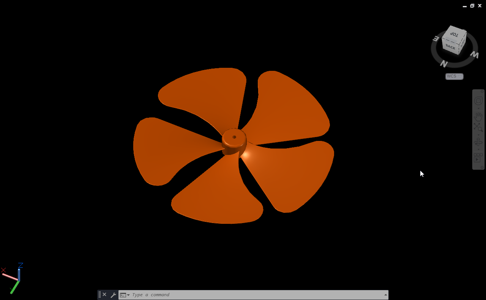

3D Fan Blade Modelling
This project focuses on creating a detailed 3D fan blade using AutoCAD. It helped me practice surface modeling techniques and study how curvature and rotation affect the final design.
About Project
I began by drawing the central hub and shaping one blade using curved profiles. After getting the right shape, I used the array tool to repeat the blade evenly around the axis. Adjusting the blade angle and thickness took a few tries until the model looked balanced and realistic.
The finished design shows smooth surfaces, correct spacing, and symmetry among all the blades. I also rendered the model to highlight the lighting and reflections, which makes the form easier to visualize.
The final outcome was a production-ready model with detailed documentation. Through this project, I learned how to create symmetrical parts, handle curved geometry, and maintain proportion while modeling in 3D.